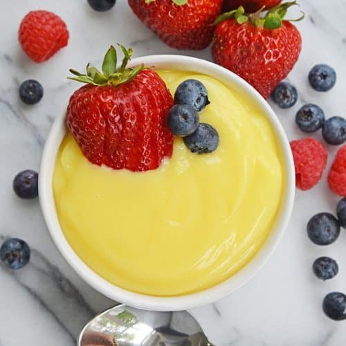

Custard, mixture of eggs, milk, sugar, and flavourings which attains its consistency by the coagulation of the egg protein by heat. Baked custard contains whole eggs, which cause the dish to solidify to a gel. Flan, or crème caramel, is a custard baked in a dish coated with caramelized sugar that forms a sauce when the custard is unmolded. For crème brûlée, the baked custard is sprinkled with sugar that is caramelized under a broiler or with a hot iron called a salamander. The sugar forms a thin crisp shell over the custard.
Back to Home